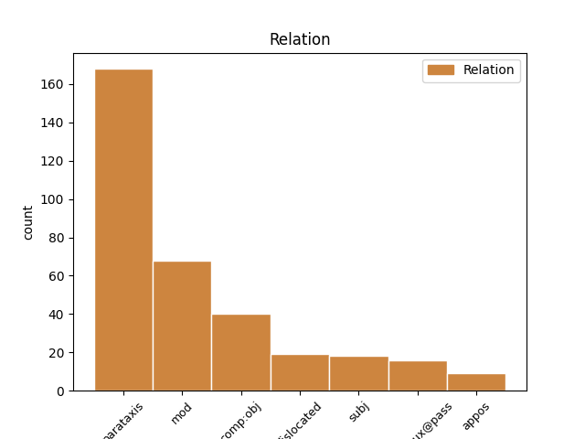
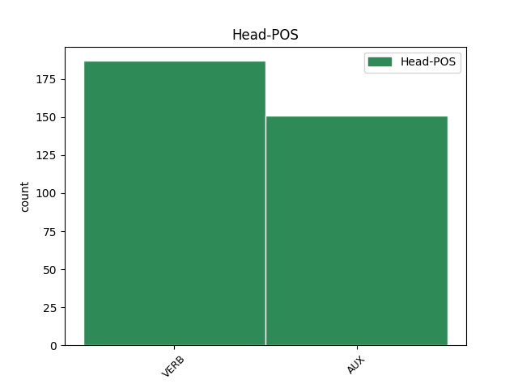
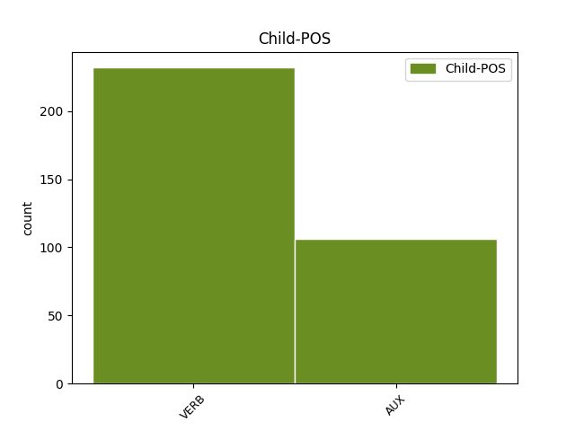

Distribution of features within this leaf



Agreement Rules sorted by frequency.
- When the dependent token is the parataxis(parataxis) of the head token, and the head token is VERB and the dependent token is VERB.
1 Det _ _ _ _ 0 _ _ _
2 visade visa VERB VB|PRT|AKT Mood=Ind|Tense=Past|VerbForm=Fin|Voice=Act 0 _ _ _
3 sig _ _ _ _ 0 _ _ _
4 att _ _ _ _ 0 _ _ _
5 dessa _ _ _ _ 0 _ _ _
6 barn _ _ _ _ 0 _ _ _
7 kom _ _ _ _ 0 _ _ _
8 att _ _ _ _ 0 _ _ _
9 sakna _ _ _ _ 0 _ _ _
10 förmåga _ _ _ _ 0 _ _ _
11 till _ _ _ _ 0 _ _ _
12 verklig _ _ _ _ 0 _ _ _
13 känsloanknytning _ _ _ _ 0 _ _ _
14 , _ _ _ _ 0 _ _ _
15 de _ _ _ _ 0 _ _ _
16 blev bli VERB VB|PRT|AKT Mood=Ind|Tense=Past|VerbForm=Fin|Voice=Act 2 parataxis _ _
17 oförmögna _ _ _ _ 0 _ _ _
18 till _ _ _ _ 0 _ _ _
19 inlevelse _ _ _ _ 0 _ _ _
20 i _ _ _ _ 0 _ _ _
21 andra _ _ _ _ 0 _ _ _
22 människor _ _ _ _ 0 _ _ _
23 , _ _ _ _ 0 _ _ _
24 till _ _ _ _ 0 _ _ _
25 att _ _ _ _ 0 _ _ _
26 verkligen _ _ _ _ 0 _ _ _
27 tycka _ _ _ _ 0 _ _ _
28 om _ _ _ _ 0 _ _ _
29 någon _ _ _ _ 0 _ _ _
30 . _ _ _ _ 0 _ _ _
1 Den _ _ _ _ 0 _ _ _
2 sortens _ _ _ _ 0 _ _ _
3 numrerade _ _ _ _ 0 _ _ _
4 kärlek _ _ _ _ 0 _ _ _
5 är vara AUX VB|PRS|AKT Mood=Ind|Tense=Pres|VerbForm=Fin|Voice=Act 0 _ _ _
6 ju _ _ _ _ 0 _ _ _
7 bara _ _ _ _ 0 _ _ _
8 en _ _ _ _ 0 _ _ _
9 förlängd _ _ _ _ 0 _ _ _
10 egenkärlek _ _ _ _ 0 _ _ _
11 : _ _ _ _ 0 _ _ _
12 det _ _ _ _ 0 _ _ _
13 är vara VERB VB|PRS|AKT Mood=Ind|Tense=Pres|VerbForm=Fin|Voice=Act 5 parataxis _ _
14 sig _ _ _ _ 0 _ _ _
15 själv _ _ _ _ 0 _ _ _
16 , _ _ _ _ 0 _ _ _
17 sina _ _ _ _ 0 _ _ _
18 egna _ _ _ _ 0 _ _ _
19 önskningar _ _ _ _ 0 _ _ _
20 man _ _ _ _ 0 _ _ _
21 älskar _ _ _ _ 0 _ _ _
22 i _ _ _ _ 0 _ _ _
23 den _ _ _ _ 0 _ _ _
24 andra _ _ _ _ 0 _ _ _
25 . _ _ _ _ 0 _ _ _
1 Ser _ _ _ _ 0 _ _ _
2 man _ _ _ _ 0 _ _ _
3 nu _ _ _ _ 0 _ _ _
4 till _ _ _ _ 0 _ _ _
5 föräldrarnas _ _ _ _ 0 _ _ _
6 behov _ _ _ _ 0 _ _ _
7 så _ _ _ _ 0 _ _ _
8 behöver behöva AUX VB|PRS|AKT Mood=Ind|Tense=Pres|VerbForm=Fin|Voice=Act 0 _ _ _
9 det _ _ _ _ 0 _ _ _
10 inte _ _ _ _ 0 _ _ _
11 råda _ _ _ _ 0 _ _ _
12 något _ _ _ _ 0 _ _ _
13 motsatsförhållande _ _ _ _ 0 _ _ _
14 där _ _ _ _ 0 _ _ _
15 , _ _ _ _ 0 _ _ _
16 vilken _ _ _ _ 0 _ _ _
17 väg _ _ _ _ 0 _ _ _
18 de _ _ _ _ 0 _ _ _
19 än _ _ _ _ 0 _ _ _
20 väljer välja VERB VB|PRS|AKT Mood=Ind|Tense=Pres|VerbForm=Fin|Voice=Act 8 mod _ SpaceAfter=No
21 , _ _ _ _ 0 _ _ _
22 om _ _ _ _ 0 _ _ _
23 samhället _ _ _ _ 0 _ _ _
24 skapar _ _ _ _ 0 _ _ _
25 former _ _ _ _ 0 _ _ _
26 för _ _ _ _ 0 _ _ _
27 att _ _ _ _ 0 _ _ _
28 ta _ _ _ _ 0 _ _ _
29 hand _ _ _ _ 0 _ _ _
30 om _ _ _ _ 0 _ _ _
31 barnen _ _ _ _ 0 _ _ _
32 som _ _ _ _ 0 _ _ _
33 är _ _ _ _ 0 _ _ _
34 friare _ _ _ _ 0 _ _ _
35 och _ _ _ _ 0 _ _ _
36 smidigare _ _ _ _ 0 _ _ _
37 än _ _ _ _ 0 _ _ _
38 de _ _ _ _ 0 _ _ _
39 vi _ _ _ _ 0 _ _ _
40 nu _ _ _ _ 0 _ _ _
41 har _ _ _ _ 0 _ _ _
42 . _ _ _ _ 0 _ _ _
1 Ty _ _ _ _ 0 _ _ _
2 när _ _ _ _ 0 _ _ _
3 Gud _ _ _ _ 0 _ _ _
4 uttryckligen _ _ _ _ 0 _ _ _
5 uppmanar _ _ _ _ 0 _ _ _
6 det _ _ _ _ 0 _ _ _
7 första _ _ _ _ 0 _ _ _
8 människoparet _ _ _ _ 0 _ _ _
9 att _ _ _ _ 0 _ _ _
10 vara _ _ _ _ 0 _ _ _
11 ' _ _ _ _ 0 _ _ _
12 fruktsamma _ _ _ _ 0 _ _ _
13 ' _ _ _ _ 0 _ _ _
14 , _ _ _ _ 0 _ _ _
15 är vara AUX VB|PRS|AKT Mood=Ind|Tense=Pres|VerbForm=Fin|Voice=Act 0 _ _ _
16 äktenskapets _ _ _ _ 0 _ _ _
17 förstahandssyfte _ _ _ _ 0 _ _ _
18 tydligt _ _ _ _ 0 _ _ _
19 angivet _ _ _ _ 0 _ _ _
20 : _ _ _ _ 0 _ _ _
21 det _ _ _ _ 0 _ _ _
22 sexuella _ _ _ _ 0 _ _ _
23 samlivet _ _ _ _ 0 _ _ _
24 skall skola AUX VB|PRS|AKT Mood=Ind|Tense=Pres|VerbForm=Fin|Voice=Act 15 parataxis _ _
25 leda _ _ _ _ 0 _ _ _
26 till _ _ _ _ 0 _ _ _
27 , _ _ _ _ 0 _ _ _
28 att _ _ _ _ 0 _ _ _
29 nya _ _ _ _ 0 _ _ _
30 individer _ _ _ _ 0 _ _ _
31 föds _ _ _ _ 0 _ _ _
32 . _ _ _ _ 0 _ _ _
1 Frågar fråga VERB VB|PRS|AKT Mood=Ind|Tense=Pres|VerbForm=Fin|Voice=Act 21 mod _ _
2 man _ _ _ _ 0 _ _ _
3 sedan _ _ _ _ 0 _ _ _
4 , _ _ _ _ 0 _ _ _
5 vilket _ _ _ _ 0 _ _ _
6 djupare _ _ _ _ 0 _ _ _
7 syfte _ _ _ _ 0 _ _ _
8 som _ _ _ _ 0 _ _ _
9 äktenskapet _ _ _ _ 0 _ _ _
10 kan _ _ _ _ 0 _ _ _
11 få _ _ _ _ 0 _ _ _
12 för _ _ _ _ 0 _ _ _
13 den _ _ _ _ 0 _ _ _
14 , _ _ _ _ 0 _ _ _
15 som _ _ _ _ 0 _ _ _
16 lever _ _ _ _ 0 _ _ _
17 i _ _ _ _ 0 _ _ _
18 Kristi _ _ _ _ 0 _ _ _
19 tro _ _ _ _ 0 _ _ _
20 , _ _ _ _ 0 _ _ _
21 blir bli VERB VB|PRS|AKT Mood=Ind|Tense=Pres|VerbForm=Fin|Voice=Act 0 _ _ _
22 svaret _ _ _ _ 0 _ _ _
23 : _ _ _ _ 0 _ _ _
24 att _ _ _ _ 0 _ _ _
25 på _ _ _ _ 0 _ _ _
26 äktenskapets _ _ _ _ 0 _ _ _
27 begränsade _ _ _ _ 0 _ _ _
28 område _ _ _ _ 0 _ _ _
29 söka _ _ _ _ 0 _ _ _
30 leva _ _ _ _ 0 _ _ _
31 ut _ _ _ _ 0 _ _ _
32 något _ _ _ _ 0 _ _ _
33 av _ _ _ _ 0 _ _ _
34 Kristi _ _ _ _ 0 _ _ _
35 kärlek _ _ _ _ 0 _ _ _
36 gentemot _ _ _ _ 0 _ _ _
37 den _ _ _ _ 0 _ _ _
38 andra _ _ _ _ 0 _ _ _
39 parten _ _ _ _ 0 _ _ _
40 i _ _ _ _ 0 _ _ _
41 äktenskapet _ _ _ _ 0 _ _ _
42 . _ _ _ _ 0 _ _ _
1 Två _ _ _ _ 0 _ _ _
2 viktiga _ _ _ _ 0 _ _ _
3 ting _ _ _ _ 0 _ _ _
4 är vara VERB VB|PRS|AKT Mood=Ind|Tense=Pres|VerbForm=Fin|Voice=Act 0 _ _ _
5 att _ _ _ _ 0 _ _ _
6 säga _ _ _ _ 0 _ _ _
7 om _ _ _ _ 0 _ _ _
8 svårigheter _ _ _ _ 0 _ _ _
9 i _ _ _ _ 0 _ _ _
10 äktenskap _ _ _ _ 0 _ _ _
11 : _ _ _ _ 0 _ _ _
12 dels _ _ _ _ 0 _ _ _
13 måste _ _ _ _ 0 _ _ _
14 i _ _ _ _ 0 _ _ _
15 kristen _ _ _ _ 0 _ _ _
16 etik _ _ _ _ 0 _ _ _
17 förlåtelsen _ _ _ _ 0 _ _ _
18 alltid _ _ _ _ 0 _ _ _
19 hållas _ _ _ _ 0 _ _ _
20 vid _ _ _ _ 0 _ _ _
21 liv _ _ _ _ 0 _ _ _
22 som _ _ _ _ 0 _ _ _
23 en _ _ _ _ 0 _ _ _
24 vital _ _ _ _ 0 _ _ _
25 tillgång _ _ _ _ 0 _ _ _
26 , _ _ _ _ 0 _ _ _
27 dels _ _ _ _ 0 _ _ _
28 måste måste AUX VB|PRS|AKT Mood=Ind|Tense=Pres|VerbForm=Fin|Voice=Act 4 parataxis _ _
29 vi _ _ _ _ 0 _ _ _
30 självklart _ _ _ _ 0 _ _ _
31 räkna _ _ _ _ 0 _ _ _
32 med _ _ _ _ 0 _ _ _
33 att _ _ _ _ 0 _ _ _
34 situationen _ _ _ _ 0 _ _ _
35 i _ _ _ _ 0 _ _ _
36 ett _ _ _ _ 0 _ _ _
37 äktenskap _ _ _ _ 0 _ _ _
38 kan _ _ _ _ 0 _ _ _
39 bli _ _ _ _ 0 _ _ _
40 outhärdlig _ _ _ _ 0 _ _ _
41 - _ _ _ _ 0 _ _ _
42 av _ _ _ _ 0 _ _ _
43 en _ _ _ _ 0 _ _ _
44 mängd _ _ _ _ 0 _ _ _
45 olika _ _ _ _ 0 _ _ _
46 skäl _ _ _ _ 0 _ _ _
47 , _ _ _ _ 0 _ _ _
48 som _ _ _ _ 0 _ _ _
49 inte _ _ _ _ 0 _ _ _
50 här _ _ _ _ 0 _ _ _
51 kan _ _ _ _ 0 _ _ _
52 uppräknas _ _ _ _ 0 _ _ _
53 . _ _ _ _ 0 _ _ _
1 Men _ _ _ _ 0 _ _ _
2 principen _ _ _ _ 0 _ _ _
3 bakom _ _ _ _ 0 _ _ _
4 likadelningen _ _ _ _ 0 _ _ _
5 tycker tycka VERB VB|PRS|AKT Mood=Ind|Tense=Pres|VerbForm=Fin|Voice=Act 0 _ _ _
6 vi _ _ _ _ 0 _ _ _
7 äger äga VERB VB|PRS|AKT Mood=Ind|Tense=Pres|VerbForm=Fin|Voice=Act 5 comp:obj _ _
8 allmän _ _ _ _ 0 _ _ _
9 giltighet _ _ _ _ 0 _ _ _
10 även _ _ _ _ 0 _ _ _
11 om _ _ _ _ 0 _ _ _
12 vi _ _ _ _ 0 _ _ _
13 är _ _ _ _ 0 _ _ _
14 medvetna _ _ _ _ 0 _ _ _
15 om _ _ _ _ 0 _ _ _
16 att _ _ _ _ 0 _ _ _
17 de _ _ _ _ 0 _ _ _
18 praktiska _ _ _ _ 0 _ _ _
19 svårigheterna _ _ _ _ 0 _ _ _
20 för _ _ _ _ 0 _ _ _
21 andra _ _ _ _ 0 _ _ _
22 ekonomiskt _ _ _ _ 0 _ _ _
23 och _ _ _ _ 0 _ _ _
24 utbildningsmässigt _ _ _ _ 0 _ _ _
25 sämre _ _ _ _ 0 _ _ _
26 lottade _ _ _ _ 0 _ _ _
27 och _ _ _ _ 0 _ _ _
28 mer _ _ _ _ 0 _ _ _
29 ' _ _ _ _ 0 _ _ _
30 omaka _ _ _ _ 0 _ _ _
31 ' _ _ _ _ 0 _ _ _
32 par _ _ _ _ 0 _ _ _
33 kan _ _ _ _ 0 _ _ _
34 vara _ _ _ _ 0 _ _ _
35 av _ _ _ _ 0 _ _ _
36 en _ _ _ _ 0 _ _ _
37 helt _ _ _ _ 0 _ _ _
38 annan _ _ _ _ 0 _ _ _
39 storleksordning _ _ _ _ 0 _ _ _
40 , _ _ _ _ 0 _ _ _
41 kanske _ _ _ _ 0 _ _ _
42 oöverstigliga _ _ _ _ 0 _ _ _
43 . _ _ _ _ 0 _ _ _
1 Frågar fråga VERB VB|PRS|AKT Mood=Ind|Tense=Pres|VerbForm=Fin|Voice=Act 0 _ _ _
2 man _ _ _ _ 0 _ _ _
3 sedan _ _ _ _ 0 _ _ _
4 , _ _ _ _ 0 _ _ _
5 vilket _ _ _ _ 0 _ _ _
6 djupare _ _ _ _ 0 _ _ _
7 syfte _ _ _ _ 0 _ _ _
8 som _ _ _ _ 0 _ _ _
9 äktenskapet _ _ _ _ 0 _ _ _
10 kan kunna AUX VB|PRS|AKT Mood=Ind|Tense=Pres|VerbForm=Fin|Voice=Act 1 comp:obj _ _
11 få _ _ _ _ 0 _ _ _
12 för _ _ _ _ 0 _ _ _
13 den _ _ _ _ 0 _ _ _
14 , _ _ _ _ 0 _ _ _
15 som _ _ _ _ 0 _ _ _
16 lever _ _ _ _ 0 _ _ _
17 i _ _ _ _ 0 _ _ _
18 Kristi _ _ _ _ 0 _ _ _
19 tro _ _ _ _ 0 _ _ _
20 , _ _ _ _ 0 _ _ _
21 blir _ _ _ _ 0 _ _ _
22 svaret _ _ _ _ 0 _ _ _
23 : _ _ _ _ 0 _ _ _
24 att _ _ _ _ 0 _ _ _
25 på _ _ _ _ 0 _ _ _
26 äktenskapets _ _ _ _ 0 _ _ _
27 begränsade _ _ _ _ 0 _ _ _
28 område _ _ _ _ 0 _ _ _
29 söka _ _ _ _ 0 _ _ _
30 leva _ _ _ _ 0 _ _ _
31 ut _ _ _ _ 0 _ _ _
32 något _ _ _ _ 0 _ _ _
33 av _ _ _ _ 0 _ _ _
34 Kristi _ _ _ _ 0 _ _ _
35 kärlek _ _ _ _ 0 _ _ _
36 gentemot _ _ _ _ 0 _ _ _
37 den _ _ _ _ 0 _ _ _
38 andra _ _ _ _ 0 _ _ _
39 parten _ _ _ _ 0 _ _ _
40 i _ _ _ _ 0 _ _ _
41 äktenskapet _ _ _ _ 0 _ _ _
42 . _ _ _ _ 0 _ _ _
1 Vilka _ _ _ _ 0 _ _ _
2 risker _ _ _ _ 0 _ _ _
3 man _ _ _ _ 0 _ _ _
4 tar ta VERB VB|PRS|AKT Mood=Ind|Tense=Pres|VerbForm=Fin|Voice=Act 19 dislocated _ _
5 genom _ _ _ _ 0 _ _ _
6 att _ _ _ _ 0 _ _ _
7 inte _ _ _ _ 0 _ _ _
8 låta _ _ _ _ 0 _ _ _
9 barnen _ _ _ _ 0 _ _ _
10 i _ _ _ _ 0 _ _ _
11 tid _ _ _ _ 0 _ _ _
12 komma _ _ _ _ 0 _ _ _
13 ut _ _ _ _ 0 _ _ _
14 bland _ _ _ _ 0 _ _ _
15 andra _ _ _ _ 0 _ _ _
16 barn _ _ _ _ 0 _ _ _
17 , _ _ _ _ 0 _ _ _
18 därom _ _ _ _ 0 _ _ _
19 talas tala VERB VB|PRS|SFO Mood=Ind|Tense=Pres|VerbForm=Fin|Voice=Pass 0 _ _ _
20 det _ _ _ _ 0 _ _ _
21 mycket _ _ _ _ 0 _ _ _
22 litet _ _ _ _ 0 _ _ _
23 och _ _ _ _ 0 _ _ _
24 forskas _ _ _ _ 0 _ _ _
25 ännu _ _ _ _ 0 _ _ _
26 mindre _ _ _ _ 0 _ _ _
27 . _ _ _ _ 0 _ _ _
1 Skall skola AUX VB|PRS|AKT Mood=Ind|Tense=Pres|VerbForm=Fin|Voice=Act 10 mod _ _
2 en _ _ _ _ 0 _ _ _
3 familj _ _ _ _ 0 _ _ _
4 kunna _ _ _ _ 0 _ _ _
5 försörja _ _ _ _ 0 _ _ _
6 sig _ _ _ _ 0 _ _ _
7 genom _ _ _ _ 0 _ _ _
8 yrkesverksamhet _ _ _ _ 0 _ _ _
9 , _ _ _ _ 0 _ _ _
10 måste måste AUX VB|PRS|AKT Mood=Ind|Tense=Pres|VerbForm=Fin|Voice=Act 0 _ _ _
11 äktenskapet _ _ _ _ 0 _ _ _
12 vänta _ _ _ _ 0 _ _ _
13 , _ _ _ _ 0 _ _ _
14 kanske _ _ _ _ 0 _ _ _
15 till _ _ _ _ 0 _ _ _
16 25-30-årsåldern _ _ _ _ 0 _ _ _
17 . _ _ _ _ 0 _ _ _
1 Vad _ _ _ _ 0 _ _ _
2 man _ _ _ _ 0 _ _ _
3 allmänt _ _ _ _ 0 _ _ _
4 kan kunna AUX VB|PRS|AKT Mood=Ind|Tense=Pres|VerbForm=Fin|Voice=Act 6 subj _ _
5 konstatera _ _ _ _ 0 _ _ _
6 är vara VERB VB|PRS|AKT Mood=Ind|Tense=Pres|VerbForm=Fin|Voice=Act 0 _ _ _
7 att _ _ _ _ 0 _ _ _
8 det _ _ _ _ 0 _ _ _
9 är _ _ _ _ 0 _ _ _
10 två _ _ _ _ 0 _ _ _
11 faktorer _ _ _ _ 0 _ _ _
12 som _ _ _ _ 0 _ _ _
13 alltid _ _ _ _ 0 _ _ _
14 haft _ _ _ _ 0 _ _ _
15 en _ _ _ _ 0 _ _ _
16 central _ _ _ _ 0 _ _ _
17 funktion _ _ _ _ 0 _ _ _
18 : _ _ _ _ 0 _ _ _
19 makarnas _ _ _ _ 0 _ _ _
20 frivilliga _ _ _ _ 0 _ _ _
21 samtycke _ _ _ _ 0 _ _ _
22 och _ _ _ _ 0 _ _ _
23 offentligheten _ _ _ _ 0 _ _ _
24 vid _ _ _ _ 0 _ _ _
25 avgivandet _ _ _ _ 0 _ _ _
26 av _ _ _ _ 0 _ _ _
27 det _ _ _ _ 0 _ _ _
28 här _ _ _ _ 0 _ _ _
29 samtycket _ _ _ _ 0 _ _ _
30 . _ _ _ _ 0 _ _ _
1 Utifrån _ _ _ _ 0 _ _ _
2 vad _ _ _ _ 0 _ _ _
3 som _ _ _ _ 0 _ _ _
4 tidigare _ _ _ _ 0 _ _ _
5 sagts _ _ _ _ 0 _ _ _
6 är vara AUX VB|PRS|AKT Mood=Ind|Tense=Pres|VerbForm=Fin|Voice=Act 0 _ _ _
7 det _ _ _ _ 0 _ _ _
8 rätt _ _ _ _ 0 _ _ _
9 klart _ _ _ _ 0 _ _ _
10 hur _ _ _ _ 0 _ _ _
11 kristen _ _ _ _ 0 _ _ _
12 etik _ _ _ _ 0 _ _ _
13 då _ _ _ _ 0 _ _ _
14 måste måste AUX VB|PRS|AKT Mood=Ind|Tense=Pres|VerbForm=Fin|Voice=Act 6 subj _ _
15 ställa _ _ _ _ 0 _ _ _
16 sig _ _ _ _ 0 _ _ _
17 till _ _ _ _ 0 _ _ _
18 föräktenskapligt _ _ _ _ 0 _ _ _
19 samliv _ _ _ _ 0 _ _ _
20 . _ _ _ _ 0 _ _ _
1 Samtidigt _ _ _ _ 0 _ _ _
2 upplever uppleva VERB VB|PRS|AKT Mood=Ind|Tense=Pres|VerbForm=Fin|Voice=Act 0 _ _ _
3 dock _ _ _ _ 0 _ _ _
4 de _ _ _ _ 0 _ _ _
5 flesta _ _ _ _ 0 _ _ _
6 ett _ _ _ _ 0 _ _ _
7 starkt _ _ _ _ 0 _ _ _
8 behov _ _ _ _ 0 _ _ _
9 av _ _ _ _ 0 _ _ _
10 att _ _ _ _ 0 _ _ _
11 höra _ _ _ _ 0 _ _ _
12 ihop _ _ _ _ 0 _ _ _
13 med _ _ _ _ 0 _ _ _
14 sin _ _ _ _ 0 _ _ _
15 familj _ _ _ _ 0 _ _ _
16 , _ _ _ _ 0 _ _ _
17 varvid _ _ _ _ 0 _ _ _
18 man _ _ _ _ 0 _ _ _
19 försöker försöka VERB VB|PRS|AKT Mood=Ind|Tense=Pres|VerbForm=Fin|Voice=Act 2 appos _ _
20 att _ _ _ _ 0 _ _ _
21 använda _ _ _ _ 0 _ _ _
22 fritiden _ _ _ _ 0 _ _ _
23 för _ _ _ _ 0 _ _ _
24 gemensamt _ _ _ _ 0 _ _ _
25 familjeliv _ _ _ _ 0 _ _ _
26 : _ _ _ _ 0 _ _ _
27 framför _ _ _ _ 0 _ _ _
28 TV _ _ _ _ 0 _ _ _
29 , _ _ _ _ 0 _ _ _
30 i _ _ _ _ 0 _ _ _
31 bilen _ _ _ _ 0 _ _ _
32 , _ _ _ _ 0 _ _ _
33 i _ _ _ _ 0 _ _ _
34 sommarstugan _ _ _ _ 0 _ _ _
35 etc _ _ _ _ 0 _ _ _
36 . _ _ _ _ 0 _ _ _
1 Ser se VERB VB|PRS|AKT Mood=Ind|Tense=Pres|VerbForm=Fin|Voice=Act 8 dislocated _ _
2 man _ _ _ _ 0 _ _ _
3 nu _ _ _ _ 0 _ _ _
4 till _ _ _ _ 0 _ _ _
5 föräldrarnas _ _ _ _ 0 _ _ _
6 behov _ _ _ _ 0 _ _ _
7 så _ _ _ _ 0 _ _ _
8 behöver behöva AUX VB|PRS|AKT Mood=Ind|Tense=Pres|VerbForm=Fin|Voice=Act 0 _ _ _
9 det _ _ _ _ 0 _ _ _
10 inte _ _ _ _ 0 _ _ _
11 råda _ _ _ _ 0 _ _ _
12 något _ _ _ _ 0 _ _ _
13 motsatsförhållande _ _ _ _ 0 _ _ _
14 där _ _ _ _ 0 _ _ _
15 , _ _ _ _ 0 _ _ _
16 vilken _ _ _ _ 0 _ _ _
17 väg _ _ _ _ 0 _ _ _
18 de _ _ _ _ 0 _ _ _
19 än _ _ _ _ 0 _ _ _
20 väljer _ _ _ _ 0 _ _ _
21 , _ _ _ _ 0 _ _ _
22 om _ _ _ _ 0 _ _ _
23 samhället _ _ _ _ 0 _ _ _
24 skapar _ _ _ _ 0 _ _ _
25 former _ _ _ _ 0 _ _ _
26 för _ _ _ _ 0 _ _ _
27 att _ _ _ _ 0 _ _ _
28 ta _ _ _ _ 0 _ _ _
29 hand _ _ _ _ 0 _ _ _
30 om _ _ _ _ 0 _ _ _
31 barnen _ _ _ _ 0 _ _ _
32 som _ _ _ _ 0 _ _ _
33 är _ _ _ _ 0 _ _ _
34 friare _ _ _ _ 0 _ _ _
35 och _ _ _ _ 0 _ _ _
36 smidigare _ _ _ _ 0 _ _ _
37 än _ _ _ _ 0 _ _ _
38 de _ _ _ _ 0 _ _ _
39 vi _ _ _ _ 0 _ _ _
40 nu _ _ _ _ 0 _ _ _
41 har _ _ _ _ 0 _ _ _
42 . _ _ _ _ 0 _ _ _
1 Det _ _ _ _ 0 _ _ _
2 är vara AUX VB|PRS|AKT Mood=Ind|Tense=Pres|VerbForm=Fin|Voice=Act 0 _ _ _
3 inte _ _ _ _ 0 _ _ _
4 klart _ _ _ _ 0 _ _ _
5 varför _ _ _ _ 0 _ _ _
6 det _ _ _ _ 0 _ _ _
7 förhåller förhålla VERB VB|PRS|AKT Mood=Ind|Tense=Pres|VerbForm=Fin|Voice=Act 2 subj _ _
8 sig _ _ _ _ 0 _ _ _
9 så _ _ _ _ 0 _ _ _
10 . _ _ _ _ 0 _ _ _
1 I _ _ _ _ 0 _ _ _
2 praktiken _ _ _ _ 0 _ _ _
3 , _ _ _ _ 0 _ _ _
4 har ha AUX VB|PRS|AKT Mood=Ind|Tense=Pres|VerbForm=Fin|Voice=Act 8 mod _ _
5 man _ _ _ _ 0 _ _ _
6 invänt _ _ _ _ 0 _ _ _
7 , _ _ _ _ 0 _ _ _
8 varierar variera VERB VB|PRS|AKT Mood=Ind|Tense=Pres|VerbForm=Fin|Voice=Act 0 _ _ _
9 olika _ _ _ _ 0 _ _ _
10 familjer _ _ _ _ 0 _ _ _
11 kraftigt _ _ _ _ 0 _ _ _
12 sinsemellan _ _ _ _ 0 _ _ _
13 när _ _ _ _ 0 _ _ _
14 det _ _ _ _ 0 _ _ _
15 gäller _ _ _ _ 0 _ _ _
16 fördelningen _ _ _ _ 0 _ _ _
17 av _ _ _ _ 0 _ _ _
18 roller _ _ _ _ 0 _ _ _
19 . _ _ _ _ 0 _ _ _
1 Av _ _ _ _ 0 _ _ _
2 de _ _ _ _ 0 _ _ _
3 42 _ _ _ _ 0 _ _ _
4 manliga _ _ _ _ 0 _ _ _
5 deltagarna _ _ _ _ 0 _ _ _
6 i _ _ _ _ 0 _ _ _
7 samma _ _ _ _ 0 _ _ _
8 åldersgrupp _ _ _ _ 0 _ _ _
9 blev bli AUX VB|PRT|AKT Mood=Ind|Tense=Past|VerbForm=Fin|Voice=Act 0 _ _ _
10 36 _ _ _ _ 0 _ _ _
11 sexuellt _ _ _ _ 0 _ _ _
12 påverkade påverkad VERB PC|PRF|UTR/NEU|PLU|IND/DEF|NOM Case=Nom|Number=Plur|Tense=Past|VerbForm=Part 9 comp:aux@pass _ SpaceAfter=No
13 . _ _ _ _ 0 _ _ _
1 Det _ _ _ _ 0 _ _ _
2 här _ _ _ _ 0 _ _ _
3 har ha VERB VB|PRS|AKT Mood=Ind|Tense=Pres|VerbForm=Fin|Voice=Act 0 _ _ _
4 uppenbara _ _ _ _ 0 _ _ _
5 konsekvenser _ _ _ _ 0 _ _ _
6 t.ex. _ _ _ _ 0 _ _ _
7 för _ _ _ _ 0 _ _ _
8 skolans _ _ _ _ 0 _ _ _
9 etiska _ _ _ _ 0 _ _ _
10 fostran _ _ _ _ 0 _ _ _
11 , _ _ _ _ 0 _ _ _
12 vilket _ _ _ _ 0 _ _ _
13 vi _ _ _ _ 0 _ _ _
14 skall skola AUX VB|PRS|AKT Mood=Ind|Tense=Pres|VerbForm=Fin|Voice=Act 3 appos _ _
15 diskutera _ _ _ _ 0 _ _ _
16 senare _ _ _ _ 0 _ _ _
17 . _ _ _ _ 0 _ _ _
1 Hur _ _ _ _ 0 _ _ _
2 fast _ _ _ _ 0 _ _ _
3 sådana _ _ _ _ 0 _ _ _
4 rollförväntningar _ _ _ _ 0 _ _ _
5 är vara AUX VB|PRS|AKT Mood=Ind|Tense=Pres|VerbForm=Fin|Voice=Act 12 dislocated _ _
6 knutna _ _ _ _ 0 _ _ _
7 till _ _ _ _ 0 _ _ _
8 olika _ _ _ _ 0 _ _ _
9 positioner _ _ _ _ 0 _ _ _
10 , _ _ _ _ 0 _ _ _
11 det _ _ _ _ 0 _ _ _
12 växlar växla VERB VB|PRS|AKT Mood=Ind|Tense=Pres|VerbForm=Fin|Voice=Act 0 _ _ _
13 mellan _ _ _ _ 0 _ _ _
14 olika _ _ _ _ 0 _ _ _
15 grupper _ _ _ _ 0 _ _ _
16 . _ _ _ _ 0 _ _ _
1 Hur _ _ _ _ 0 _ _ _
2 man _ _ _ _ 0 _ _ _
3 uppfattar uppfatta VERB VB|PRS|AKT Mood=Ind|Tense=Pres|VerbForm=Fin|Voice=Act 13 subj _ _
4 ett _ _ _ _ 0 _ _ _
5 sådant _ _ _ _ 0 _ _ _
6 löfte _ _ _ _ 0 _ _ _
7 och _ _ _ _ 0 _ _ _
8 vad _ _ _ _ 0 _ _ _
9 man _ _ _ _ 0 _ _ _
10 menar _ _ _ _ 0 _ _ _
11 med _ _ _ _ 0 _ _ _
12 det _ _ _ _ 0 _ _ _
13 beror bero VERB VB|PRS|AKT Mood=Ind|Tense=Pres|VerbForm=Fin|Voice=Act 0 _ _ _
14 förstås _ _ _ _ 0 _ _ _
15 på _ _ _ _ 0 _ _ _
16 personligheten _ _ _ _ 0 _ _ _
17 , _ _ _ _ 0 _ _ _
18 värderingarna _ _ _ _ 0 _ _ _
19 , _ _ _ _ 0 _ _ _
20 attityden _ _ _ _ 0 _ _ _
21 till _ _ _ _ 0 _ _ _
22 motgångar _ _ _ _ 0 _ _ _
23 , _ _ _ _ 0 _ _ _
24 motpartens _ _ _ _ 0 _ _ _
25 inställning _ _ _ _ 0 _ _ _
26 , _ _ _ _ 0 _ _ _
27 beredskapen _ _ _ _ 0 _ _ _
28 till _ _ _ _ 0 _ _ _
29 offer _ _ _ _ 0 _ _ _
30 osv _ _ _ _ 0 _ _ _
31 . _ _ _ _ 0 _ _ _
1 - _ _ _ _ 0 _ _ _
2 Ska skola AUX VB|PRS|AKT Mood=Ind|Tense=Pres|VerbForm=Fin|Voice=Act 9 dislocated _ _
3 du _ _ _ _ 0 _ _ _
4 vara _ _ _ _ 0 _ _ _
5 med _ _ _ _ 0 _ _ _
6 i _ _ _ _ 0 _ _ _
7 EEC _ _ _ _ 0 _ _ _
8 så _ _ _ _ 0 _ _ _
9 får få AUX VB|PRS|AKT Mood=Ind|Tense=Pres|VerbForm=Fin|Voice=Act 0 _ _ _
10 du _ _ _ _ 0 _ _ _
11 allt _ _ _ _ 0 _ _ _
12 vara _ _ _ _ 0 _ _ _
13 med _ _ _ _ 0 _ _ _
14 i _ _ _ _ 0 _ _ _
15 Nato _ _ _ _ 0 _ _ _
16 också _ _ _ _ 0 _ _ _
17 . _ _ _ _ 0 _ _ _
Disagree Examples:
1 Engelska _ _ _ _ 0 _ _ _
2 blir bli VERB VB|PRS|AKT Mood=Ind|Tense=Pres|VerbForm=Fin|Voice=Act 0 _ _ _
3 obligatoriskt _ _ _ _ 0 _ _ _
4 hela _ _ _ _ 0 _ _ _
5 högstadiet _ _ _ _ 0 _ _ _
6 igenom _ _ _ _ 0 _ _ _
7 ( _ _ _ _ 0 _ _ _
8 tidigare _ _ _ _ 0 _ _ _
9 var vara AUX VB|PRT|AKT Mood=Ind|Tense=Past|VerbForm=Fin|Voice=Act 2 parataxis _ _
10 det _ _ _ _ 0 _ _ _
11 obligatoriskt _ _ _ _ 0 _ _ _
12 t o m _ _ _ _ 0 _ _ _
13 årskurs _ _ _ _ 0 _ _ _
14 7 _ _ _ _ 0 _ _ _
15 , _ _ _ _ 0 _ _ _
16 sedan _ _ _ _ 0 _ _ _
17 frivilligt _ _ _ _ 0 _ _ _
18 ) _ _ _ _ 0 _ _ _
19 . _ _ _ _ 0 _ _ _
1 Undervisningen _ _ _ _ 0 _ _ _
2 blir bli AUX VB|PRS|AKT Mood=Ind|Tense=Pres|VerbForm=Fin|Voice=Act 0 _ _ _
3 utökad utöka VERB PC|PRF|UTR|SIN|IND|NOM Case=Nom|Definite=Ind|Gender=Com|Number=Sing|Tense=Past|VerbForm=Part 2 comp:aux@pass _ _
4 i _ _ _ _ 0 _ _ _
5 bl a _ _ _ _ 0 _ _ _
6 * _ _ _ _ 0 _ _ _
7 miljöfrågor _ _ _ _ 0 _ _ _
8 * _ _ _ _ 0 _ _ _
9 sexual- _ _ _ _ 0 _ _ _
10 och _ _ _ _ 0 _ _ _
11 samlevnadsfrågor _ _ _ _ 0 _ _ _
12 * _ _ _ _ 0 _ _ _
13 könsrollsfrågor _ _ _ _ 0 _ _ _
14 * _ _ _ _ 0 _ _ _
15 internationella _ _ _ _ 0 _ _ _
16 frågor _ _ _ _ 0 _ _ _
17 och _ _ _ _ 0 _ _ _
18 problem _ _ _ _ 0 _ _ _
19 * _ _ _ _ 0 _ _ _
20 trafik _ _ _ _ 0 _ _ _
21 * _ _ _ _ 0 _ _ _
22 alkohol _ _ _ _ 0 _ _ _
23 , _ _ _ _ 0 _ _ _
24 narkotika _ _ _ _ 0 _ _ _
25 och _ _ _ _ 0 _ _ _
26 tobak _ _ _ _ 0 _ _ _
1 På _ _ _ _ 0 _ _ _
2 BB _ _ _ _ 0 _ _ _
3 brukar _ _ _ _ 0 _ _ _
4 personalen _ _ _ _ 0 _ _ _
5 se _ _ _ _ 0 _ _ _
6 till _ _ _ _ 0 _ _ _
7 att _ _ _ _ 0 _ _ _
8 anmälan _ _ _ _ 0 _ _ _
9 blir bli AUX VB|PRS|AKT Mood=Ind|Tense=Pres|VerbForm=Fin|Voice=Act 0 _ _ _
10 ifylld fylla_i VERB PC|PRF|UTR|SIN|IND|NOM Case=Nom|Definite=Ind|Gender=Com|Number=Sing|Tense=Past|VerbForm=Part 9 comp:aux@pass _ _
11 och _ _ _ _ 0 _ _ _
12 avsänd _ _ _ _ 0 _ _ _
13 . _ _ _ _ 0 _ _ _
1 Om _ _ _ _ 0 _ _ _
2 kvalitetsförändringen _ _ _ _ 0 _ _ _
3 kan _ _ _ _ 0 _ _ _
4 anses _ _ _ _ 0 _ _ _
5 motsvara _ _ _ _ 0 _ _ _
6 prisförändringen _ _ _ _ 0 _ _ _
7 så _ _ _ _ 0 _ _ _
8 blir bli AUX VB|PRS|AKT Mood=Ind|Tense=Pres|VerbForm=Fin|Voice=Act 0 _ _ _
9 index _ _ _ _ 0 _ _ _
10 opåverkat opåverkad VERB PC|PRF|NEU|SIN|IND|NOM Case=Nom|Definite=Ind|Gender=Neut|Number=Sing|Tense=Past|VerbForm=Part 8 comp:aux@pass _ _
11 - _ _ _ _ 0 _ _ _
12 i _ _ _ _ 0 _ _ _
13 annat _ _ _ _ 0 _ _ _
14 fall _ _ _ _ 0 _ _ _
15 skall _ _ _ _ 0 _ _ _
16 åtminstone _ _ _ _ 0 _ _ _
17 någon _ _ _ _ 0 _ _ _
18 del _ _ _ _ 0 _ _ _
19 av _ _ _ _ 0 _ _ _
20 prishöjningen _ _ _ _ 0 _ _ _
21 beaktas _ _ _ _ 0 _ _ _
22 . _ _ _ _ 0 _ _ _
1 Den _ _ _ _ 0 _ _ _
2 som _ _ _ _ 0 _ _ _
3 blir bli AUX VB|PRS|AKT Mood=Ind|Tense=Pres|VerbForm=Fin|Voice=Act 0 _ _ _
4 vald välja VERB PC|PRF|UTR|SIN|IND|NOM Case=Nom|Definite=Ind|Gender=Com|Number=Sing|Tense=Past|VerbForm=Part 3 comp:aux@pass _ _
5 måste _ _ _ _ 0 _ _ _
6 således _ _ _ _ 0 _ _ _
7 vara _ _ _ _ 0 _ _ _
8 bosatt _ _ _ _ 0 _ _ _
9 inom _ _ _ _ 0 _ _ _
10 landstingsområdet _ _ _ _ 0 _ _ _
11 resp _ _ _ _ 0 _ _ _
12 kommunen _ _ _ _ 0 _ _ _
13 . _ _ _ _ 0 _ _ _